7 · Recognize hazards and prepare for safe work
B1 · Safety orientation
Recognize the hazard, understand the control, confirm the responsibility and explain the next step.
| B1 learning task | Classroom evidence |
|---|---|
| 1 · Describe PPE: responsibilities, selection, use and care | “Follow the responsibility without losing the hazard” through “Inspect the decision, not just the item” |
| 2 · Describe workplace hazard assessment | “Build a hazard-and-control record” through “Reassess when the conditions change” |
| 3 · Describe company safety policies and orientation | “Close the orientation gaps” |
| 4 · Review WHMIS and first-aid requirements | “Resolve a label-and-SDS mismatch” through “Make the emergency message useful” |
| 5 · Review WorkSafeBC rigging requirements | “Read a proposed lift for missing evidence” through “Identify geometry and communicate clearly” |
| 6 · Describe site-specific safety risks | “Use the manual to ask the right question” through “Stop an unsupported site assumption” |
| 7 · Describe public safety and equipment security | “Review the public route” through “Integrated classroom safety brief” |
Begin with the work and the people affected
A hazard is a source or situation with the potential to cause harm. Risk considers the likelihood and consequences of that harm under the actual conditions. A control changes those conditions to prevent or reduce exposure. A control needs an owner, a way to check it and a response if it fails. “Be careful” does not tell a new worker which action is required.
The paving crew works around moving equipment, hot materials, changing surfaces and other people. A task that was controlled yesterday may change with wind, visibility, traffic, equipment condition or a different worker. Before work begins, the crew needs a shared understanding of the task and the current controls. During the work, a changed condition needs attention rather than silent improvisation.
The examples in this chapter teach recognition and decision making. The workplace must provide its own orientation, procedures, training, qualified supervision and emergency arrangements. Read the complete applicable WorkSafeBC requirements when preparing actual work. A classroom exercise does not qualify a person to rig a load, operate machinery, direct traffic or act as the designated first-aid attendant.
7.1 · PPE is selected for a hazard and a person
Personal protective equipment (PPE) is equipment worn to protect a person against specified hazards. Selection starts with an assessment of the exposure and the work. A product that protects against one hazard may not protect against another. A general-purpose glove is different from a glove selected for a particular chemical; eye protection and face protection have different roles; hearing protection must suit the assessed noise exposure and the required program.
Fit and compatibility matter. A respirator must be appropriate for the contaminant and conditions and used within the required respiratory-protection program. A generic “dust mask” description does not establish adequate protection against a gas, oxygen deficiency or a particular dust. A facepiece, eyewear, headgear and other items must work together without making one another ineffective. Training includes the limits of the equipment, not just how to put it on.
Know the provision responsibilities
WorkSafeBC OHS Regulation 8.2 makes the worker responsible for clothing needed for the natural elements, general-purpose work gloves, appropriate footwear including safety footwear, and safety headgear. The employer provides all other PPE required by the regulation at no cost to the worker. Agreements may provide for the employer to supply some or all of the worker-responsibility items. If employer-provided PPE causes allergenic or other adverse health effects, the employer must provide appropriate alternatives or safe measures. Read the actual agreement and the complete regulation before deciding how an item is supplied.
Responsibility to provide an item does not remove the employer's duties concerning suitable protection, instruction and the workplace. Under 8.3, PPE must provide effective protection, be compatible, avoid creating a hazard and be maintained in good working order and sanitary condition. Where workplace evaluation is required, 8.4 addresses consultation. 8.5 specifies program elements for chemical exposure or oxygen-deficient atmospheres, including selection, use, inspection, cleaning, maintenance, storage and training.
| Check | What to establish | Example of a useful record |
|---|---|---|
| Hazard and task | What exposure is being controlled? | “Splash task; actual product SDS and procedure identified.” |
| Selection | Does the equipment protect against this exposure? | Product/model, standard or rating where required, selection confirmation |
| Fit and compatibility | Can the person use it correctly with other PPE? | Fit/training record as applicable; unresolved interference reported |
| Inspection | Is it complete, serviceable and within its permitted use? | Defect or condition recorded; unsuitable equipment withdrawn |
| Use and limits | What can it protect against, and when is it insufficient? | Demonstration and explanation checked by the instructor/supervisor |
| Care and storage | How is contamination, damage or deterioration prevented? | Manufacturer procedure and assigned care arrangements |
Follow the responsibility without losing the hazard
Sort these fictional supply questions using 8.2: weather jacket, general-purpose work gloves, safety footwear, safety headgear, and chemical-specific protection required by the assessed task. Explain how an employer agreement could affect the first four. Then explain why “I bought it myself” does not establish that an item is suitable. Keep a written answer with the clause and the outstanding selection question. Skills: Reading, Writing, Problem Solving.
Inspect the decision, not just the item
Fictional observations: a learner's eyewear lifts a respirator seal; a glove's chemical suitability is unknown; a headgear component is cracked; a reusable item is visibly contaminated. Make a four-row action record. Identify the unresolved protection issue, how exposure is avoided while it is resolved, who must assess it and what evidence is needed before use. Do not prescribe a substitute product. Explain one case aloud and invite a partner to check it. Skills: Communication, Collaboration, Problem Solving.
7.2 · Recognize how exposure happens
A hazard assessment identifies the job steps, people exposed, hazards, existing controls and further controls needed. It must consider routine work and foreseeable changes. Cleaning, clearing a blockage, maintenance, refuelling and a public-access change can introduce hazards that are absent from normal production.
FIGURE T20
A hazard needs a route to reach you

Inhalation brings an airborne contaminant into the respiratory system. Carbon monoxide can occur with combustion equipment; hydrogen sulphide can be a concern in particular petroleum-related or confined-space conditions; welding produces fumes specific to the process and materials. Dust-generating work can create respirable crystalline silica exposure. Disturbing suspect asbestos-containing material requires identification and the applicable controls. These examples identify possible hazards to assess, not a claim that every paving site contains every substance. Smell, appearance and a photograph cannot establish a safe airborne concentration.
Ingestion can occur when contamination reaches the mouth through hands, food, drink or other objects. Absorption occurs when a substance enters through skin; its significance depends on the substance. Injection can occur when high-pressure fluid penetrates skin. A small injection wound can conceal serious injury: report the event and obtain emergency medical care promptly under the emergency procedure. Never use a hand to search for a pressurized leak.
Hazards also act through noise, vibration, heat, cold and physical contact. Noise exposure needs assessment and controls; hearing protection is one part of the required response. Vibration can affect the hands and arms or the whole body, depending on the equipment and exposure. Heat risk depends on workload, weather, clothing and other conditions; a plan may include controls, acclimatization, suitable breaks, hydration and emergency response. Cold and wet conditions can affect health, dexterity and traction. A calendar month alone does not establish a safe exposure.
Biological hazards may include bacteria, other microorganisms or viruses encountered in the actual work environment. Contaminated water, waste or sharps require the relevant assessment and procedure. Workers should report an unexpected condition and keep others from exposure while the responsible person arranges a response. Do not handle an unknown sharp or contaminated material as an improvised classroom demonstration.
Musculoskeletal injury (MSI) involves muscles, tendons, joints or related tissues. Force, repetition, posture, duration and work organization can contribute. A shovel's load, a rake's reach and a wheelbarrow route affect the demand on a person. A change in tool, load handling, layout or work organization can reduce that demand. An awkward movement may cause a strain or sprain; a crush, impact or fall can cause trauma. Reporting early discomfort or fatigue helps the crew address a developing problem.
Put the control before the exposure
WorkSafeBC 5.55 requires hazardous-substance exposure to be eliminated or controlled below harmful levels and applicable exposure limits using the specified control approaches. A substitute must have known hazards and reduce the risk. PPE as the primary control is permitted only under the conditions in the clause; it is not an automatic first choice. Effective controls often work together.
FIGURE T21
Control the exposure before it reaches a person
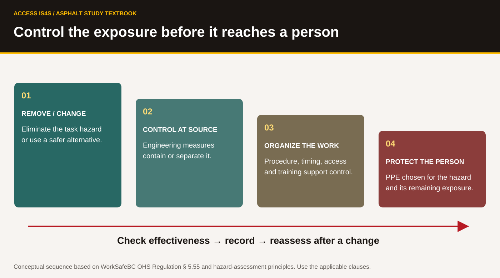
Worked example. A fictional crew proposes cutting near an occupied entrance. The observation “dust reaches the doorway” identifies a possible exposure route and affected people. It does not measure the substance or concentration. The next step is to prevent the uncontrolled exposure and have the responsible people assess the material, cutting method, controls and access arrangement. A useful record identifies the task and location, what was observed, who may be exposed, the interim response, the person responsible and what must be verified before work resumes. Simply handing out unspecified masks leaves critical questions unanswered.
Build a hazard-and-control record
Use four fictional task cards: (a) combustion equipment proposed beside an enclosed work space; (b) a worker eating with contaminated gloves; (c) repetitive shovelling along an obstructed route; (d) hot weather with a new worker and a changed workload. For each, identify the exposure mechanism, affected people, missing assessment information, a control question and the person responsible for resolving it. State what would trigger reassessment. Skills: Reading, Writing, Problem Solving.
Reassess when the conditions change
Your group has prepared the cutting-task record from the worked example. The facility now needs its entrance for a scheduled delivery, and the wind direction has changed. Revise the record rather than carrying forward its previous conclusion. Create a visual task brief that another group can read in one minute; test whether they can identify the unresolved decisions. Each learner keeps one contribution and one revision. Skills: Adaptability, Creativity and Innovation, Collaboration, Communication.
7.3 · Orientation connects policy to a real workplace
A company safety policy states commitments and responsibilities. A procedure explains how a particular task is controlled. A manual may contain equipment or program instructions. Orientation connects a person to the workplace: who supervises them, what they are assigned, what hazards apply, what procedures they need and how to get help. Reading a general policy cannot replace a demonstration of the actual task.
WorkSafeBC 3.22–3.25 addresses young and new workers, including workplace-specific orientation and training before work begins, additional training when needed and records. Topics include rights and responsibilities, supervisor contact, hazards, safe work procedures, emergency procedures, first aid and instruction/demonstration of the work. A person experienced elsewhere can still be new to this workplace. Asking for more instruction when a task is unfamiliar is part of responsible work.
Fictional orientation card O-01. Learner: Rowan. Assigned task: document and tool identification under instructor supervision. Supervisor role: classroom instructor. Location: Cedar Learning Access practice drawing. Actual machinery operation: not assigned. First-aid contact, emergency location description and assembly point: to be confirmed for the real training venue. Permitted tools: inspected teaching samples selected by the instructor. Open items: venue emergency arrangements and demonstration boundaries. The card is incomplete until the real venue information is confirmed.
Close the orientation gaps
Identify what O-01 does establish and what it leaves unresolved. Draft five precise orientation questions, including who supervises, which task is authorized, how help is reached, how a hazard is reported and how additional instruction is obtained. Rehearse a respectful stop-and-clarify conversation. Record the questions and who must answer them; do not fill venue blanks with invented information. Skills: Reading, Writing, Communication.
7.4 · WHMIS and first aid are working systems
WHMIS connects hazard classification, labels, safety data sheets (SDSs), education and workplace training. A supplier label identifies a hazardous product and communicates prescribed hazard information. A workplace label is required in specified workplace circumstances and has its own information requirements. An SDS gives structured information about the product, hazards, handling, exposure controls, first aid and other matters. The label, SDS and actual product identifier must agree.
A pictogram is a starting point for understanding a hazard. It does not give a complete response procedure, exposure limit, glove selection or first-aid instruction. Some classified hazards do not require a pictogram. The environmental symbol may appear on an SDS or label but is not mandatory under WHMIS. Product classification is not determined by choosing whichever picture looks most alarming.
WHMIS SYMBOL STUDY
Read the pictogram with the product information
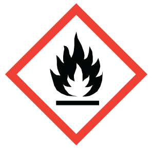
FlameFlammability and related hazards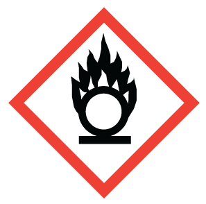
Flame over circleOxidizing hazard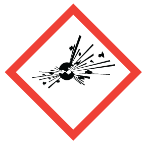
Exploding bombExplosive / reactive hazards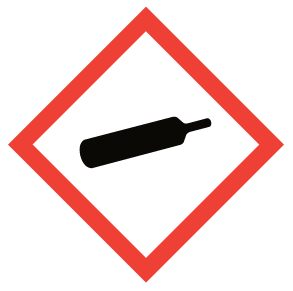
Gas cylinderGases under pressure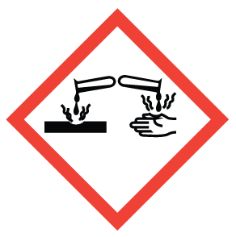
CorrosionCorrosive effects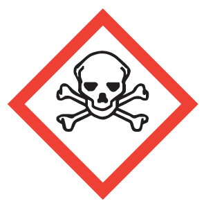
Skull and crossbonesSevere acute toxicity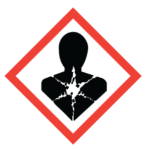
Health hazardSerious health effects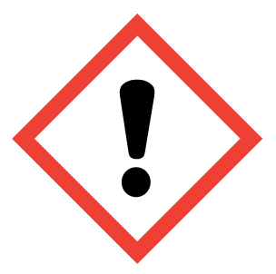
Exclamation markHarmful / irritant effects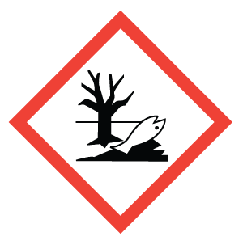
EnvironmentAquatic hazard; not mandatory under WHMIS| SDS section | What to locate in this chapter |
|---|---|
| 1 · Identification | Product identifier, recommended use and supplier/emergency contact information |
| 2 · Hazard identification | Classification, label elements and other hazards |
| 4 · First-aid measures | Product-specific first-aid information and need for medical attention |
| 6 · Accidental release measures | Spill precautions and response information |
| 7 · Handling and storage | Safe handling, storage and incompatibility information |
| 8 · Exposure controls / personal protection | Applicable control and protection information |
| 10 · Stability and reactivity | Conditions and incompatible materials to avoid |
Fictional records exercise W-01. A container is marked “Training Cleaner A.” The available sheet is titled “Training Cleaner B,” revision 2. A colleague says the two are probably similar. No chemical composition, classification or use procedure is supplied in this exercise. The mismatch is the problem to solve; these invented names are not usable products or SDSs.
Resolve a label-and-SDS mismatch
Explain why W-01 is insufficient for use. Identify the exact information needed and the action to prevent use while the responsible person resolves the mismatch. Use a device to open the local CCOHS label and SDS references from the WHMIS library, find the product-identifier requirement, and save/reopen a short record of what you found. Choose three pictograms from the figure, name their associated hazard meaning and explain why a picture alone cannot select a control. Skills: Reading, Digital, Writing, Problem Solving.
First aid depends on the workplace's assessed needs. WorkSafeBC 3.16 requires the employer's written assessment and appropriate equipment, supplies, facilities, attendants and services; related provisions address procedures and communication. A general training certificate does not establish that a particular site has the required coverage. The designated attendant needs the appropriate valid certification for the role, and workers need to know how to summon assistance. The written assessment is reviewed as required and when relevant circumstances change.
Make the emergency message useful
For the real training venue, identify the confirmed first-aid contact, way to summon help, location description and person responsible for meeting responders. If any item is unknown, record who will confirm it before the activity. In a spoken simulation only, practise giving the location, nature of the incident, number of people involved and known immediate hazards. Do not place a real emergency call for practice. Explain why this classroom task does not issue a first-aid qualification. Skills: Communication, Writing, Collaboration.
7.5 · Rigging starts with qualified people and known information
Rigging connects and controls a load for lifting or handling using suitable equipment and arrangements. A sling connects the load to the lifting system. A shackle, hook or other fitting has an identified function, compatibility and working load limit. Working load limit (WLL) describes a permitted working load under stated conditions; it is not a universal number detached from configuration, angle or component condition.
WorkSafeBC Part 15 is the starting regulatory reading for this task. Under 15.2, rigging and slinging must be done by or under the direct supervision of qualified workers familiar with the rigging and code of signals. The complete provisions address identification, design factors, WLL, operation, slings, components and inspection. Manufacturer instructions and the actual lift planning are also needed. A learner must be able to recognize when the information or qualification is missing.
| Reading checkpoint | Requirement or question to establish |
|---|---|
| Qualified person · 15.2 | Who is qualified to rig and supervise the proposed work? |
| WLL and identification · 15.4–15.5 | Is the equipment identified and its applicable WLL established? |
| Signals · 15.20 | Which standard signals and communication arrangements apply? |
| Inspection · 15.31 | Slings and attachments must be visually inspected before use on each shift; defective equipment is immediately removed from service. |
| Sling assembly · 15.33 | The WLL of individual components and legs must not be exceeded under the specified rules. |
| Sling angle · 15.34 | Angle is from vertical; required reduction is determined by a qualified person/manufacturer or the table as permitted. |
FIGURE T22
Rigging: identify the angle you are reading
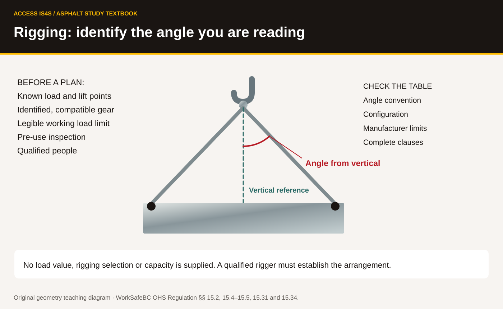
An angle measured from vertical is different from an angle measured from horizontal. A reader must identify the convention before reading a table. The diagram shows the geometry, but supplies no load value, component identification or planned configuration. It cannot be used to select gear. Likewise, a label on one leg does not establish the allowable load of an entire assembly.
FIGURE T23
Read the established crane signals
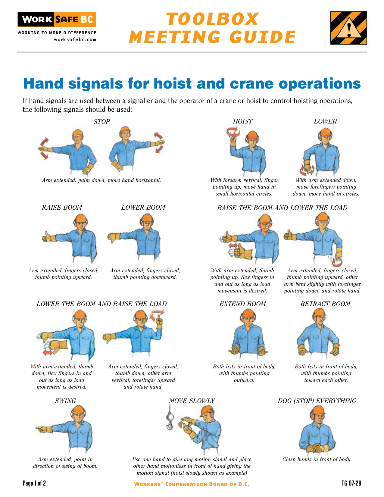
Read a proposed lift for missing evidence
Fictional request: “Lift the crate with the slings beside it. It should be light enough. The tag on one sling cannot be read. We have not confirmed the load mass, lift points, configuration or qualified rigger.” Write a response identifying at least five unresolved items. Explain why guessing the weight or using the clearest-looking sling is inadequate. Locate 15.2, 15.31 and 15.34 in the local regulation and record the requirements in your own words. No lift is performed. Skills: Reading, Writing, Problem Solving.
Identify geometry and communicate clearly
Point to the vertical reference and sling leg in the diagram. Explain which angle Table 15-3 uses. Then, with the instructor, identify two illustrated crane signals on the official sheet and locate their names. Practise naming/recognizing the pictured signals in the classroom only; this exercise does not authorize signalling a crane. Explain how an unclear or conflicting signal would be handled through the actual safe-work procedure. Skills: Reading, Communication, Collaboration.
7.6 · Recognize the site and machine hazards
A paving machine has areas that move, heat, pivot or hold stored energy. A stopped engine does not prove all hazardous energy is controlled. Electrical energy, hydraulic pressure, elevated components, springs, gravity, hot surfaces and pressurized systems can remain hazardous. Isolation, lockout, blocking and verification require the applicable procedure and trained people. Do not reach into a feeder, auger or other moving mechanism to clear material.
FIGURE T24
Find the warning before the control
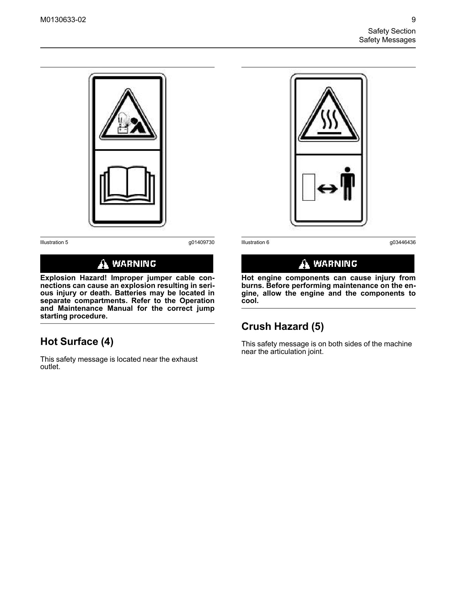
FIGURE T25
Articulation and the steering frame lock

The articulation joint allows sections of some machines to pivot. A steering frame lock is a model-specific protective device for the circumstances described in its manual. Its existence in a picture does not show that it has been installed or that all energy has been isolated. Batteries, tyres, hydraulic lines and fuel systems require their own procedures. Opening a hot or pressurized system, standing near a moving joint or relying on a raised component without the specified support can cause serious harm.
FIGURE T26
Locate all 19 original roller-control callouts

Look and name. A control panel illustrates why training must match the model. Labels, interlocks and functions vary. Identify the words that you can read in this manual figure, then identify which publication and machine applicability you would verify before touching a real control. The picture is not a starting or shutdown sequence.
| Site risk | What must be established before the work |
|---|---|
| Slips, trips and falls | Access surface, housekeeping, lighting, edges and the applicable fall-protection arrangement |
| Moving vehicles, reversing and crush points | Traffic arrangement, visibility, pedestrian separation and agreed communication |
| Hot mixture, surfaces and burns | Exposure points, separation, suitable protection and emergency response |
| Overhead utilities | Actual line/voltage information, required limits of approach and the applicable authority's procedure; no single clearance fits every case |
| Underground utilities | BC 1 Call request and responses, affected owners, verified location and safe excavation procedure; a web-map line is insufficient |
| Noise and vibration | Assessed exposure, equipment/work controls and required protection/program |
| Fatigue, illness, drugs or alcohol impairment | Fitness for the task, reporting/support arrangements and reassignment where needed; pressure to continue does not remove the hazard |
| Inexperience, inattention or complacency | Task-specific instruction, supervision, clear limits and renewed checks after a change |
A public utility map can help ask a question. It does not establish a buried asset's exact position, depth, status or clearance for excavation. A record's owner, maintenance responsibility and operational responsibility may be different fields. A record marked proposed or abandoned must not be silently treated as a verified in-service line. Chapter 5's map desk teaches these distinctions with fictional data.
Use the manual to ask the right question
In the roller safety page, find one warning and identify the hazard and stated response. In the steering-frame illustration, identify the lock and the joint it relates to. State the publication/model context, what the image establishes and what must be verified on the actual machine. Explain why a key switched off or a visible lock is insufficient evidence that every energy source is controlled. Skills: Reading, Problem Solving, Writing.
Stop an unsupported site assumption
Fictional messages: “The utility line on the map is exact”; “The overhead wire looks high enough”; “The engine is off, so the raised part is safe”; “We've done this for years, so no new check is needed.” Rewrite each as a precise verification question and an appropriate interim response that avoids exposure. For one case, use the plan desk and save a note identifying the source status and the missing information. Skills: Adaptability, Digital, Writing, Problem Solving.
7.7 · Protect the public and secure the equipment
A site can affect people who never joined the crew briefing: visitors, delivery drivers, people using mobility aids, nearby workers and people passing the entrance. The work plan must address how they move, how they are kept from hazards and how information reaches them. Traffic control follows the applicable road authority's plan and WorkSafeBC Part 18 requirements. A hand-drawn arrow or cone in a teaching picture does not establish a compliant layout.
FIGURE T27
Plan the people routes as carefully as the work

At the end of a work period, the crew still has responsibilities. Equipment must be parked and secured under the actual manufacturer and site procedures. Brakes, wheel chocks where required, isolation and the treatment of raised components depend on the equipment and conditions. Remove access to unauthorized operation and verify the planned public/site boundaries. A generic instruction to “turn it off” leaves stored energy, movement and access questions unresolved.
Worked example. A crew has secured a machine under its procedure, but the public route now passes beside a hot component. Completing one equipment-security task has not resolved the public-exposure hazard. The responsible people must reassess the access arrangement, control the exposure and communicate the changed route. The handover records both the machine status and the remaining site condition.
Review the public route
Use the conceptual diagram. Identify who may need access, how a pedestrian/vehicle conflict could arise and what the drawing cannot establish. Create five questions for the responsible site planner, including accessibility, visibility, control of entry, emergency access and changing conditions. Improve the clarity of the public-route notice without inventing a traffic-control layout or barrier specification. Skills: Communication, Creativity and Innovation, Problem Solving.
Integrated classroom safety brief
Prepare a two-page brief for the fictional Cedar Learning Access site. Include: task and limits; PPE decision record; four hazard/control questions; orientation gaps; label/SDS match check; first-aid contact verification; rigging prerequisites; utility information limits; and public/equipment-security handover. Reuse your earlier work but resolve contradictions. List the responsible role and needed evidence beside each open item. Attach your checked Chapter 5 quantity/revision sheet and the angle-convention diagram from “Identify geometry and communicate clearly”. Add a visual that helps a classmate find a critical question quickly.
Exchange briefs. Your partner tests whether they can find the unresolved issues without your explanation. Revise, save and reopen your final brief. Each learner presents one decision and one change they made after feedback. Skills: all nine Skills for Success. The evidence is your accurate reasoning and clear record, including the points that still require qualified or site-specific confirmation.